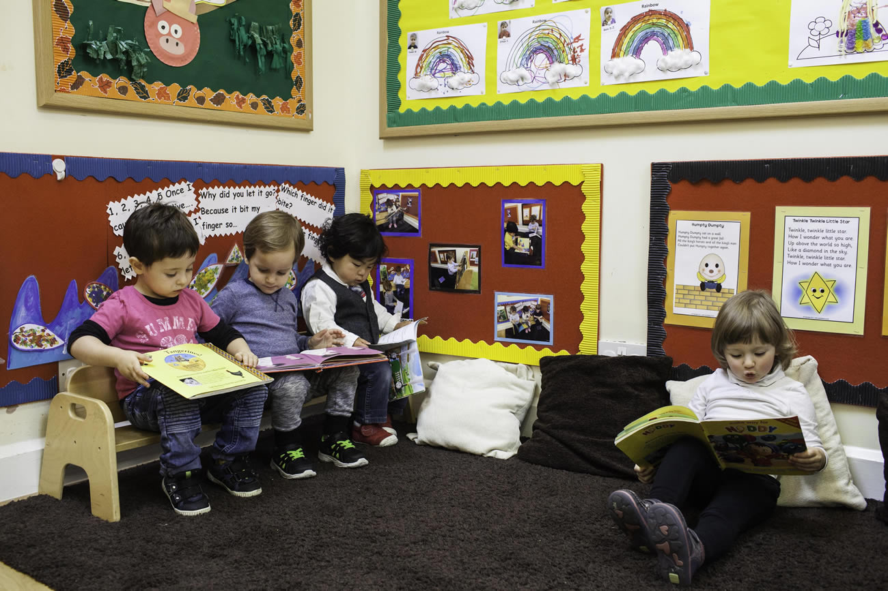
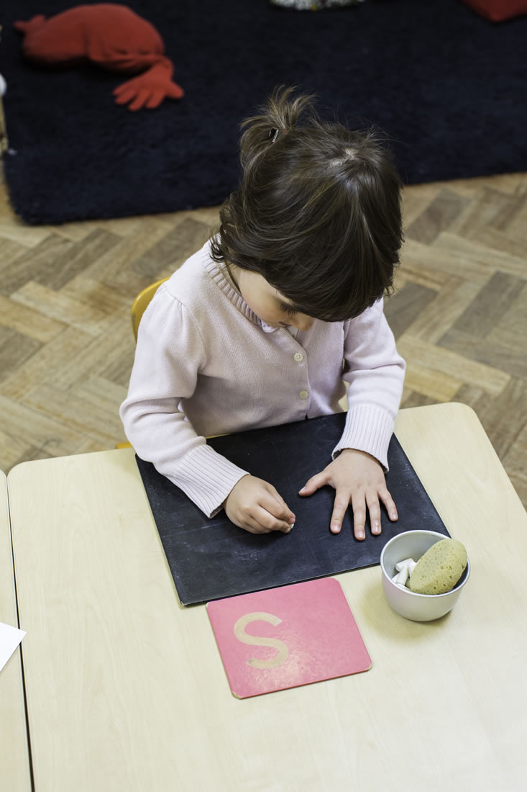
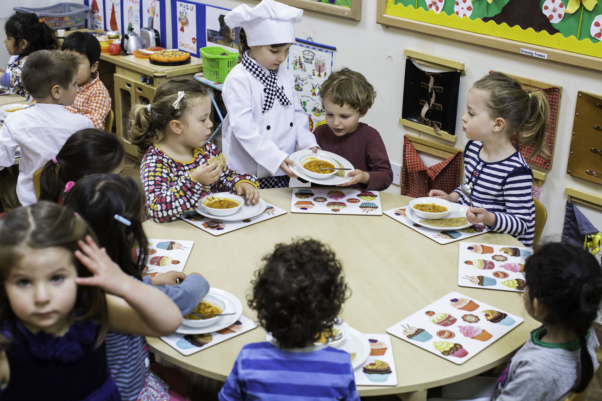
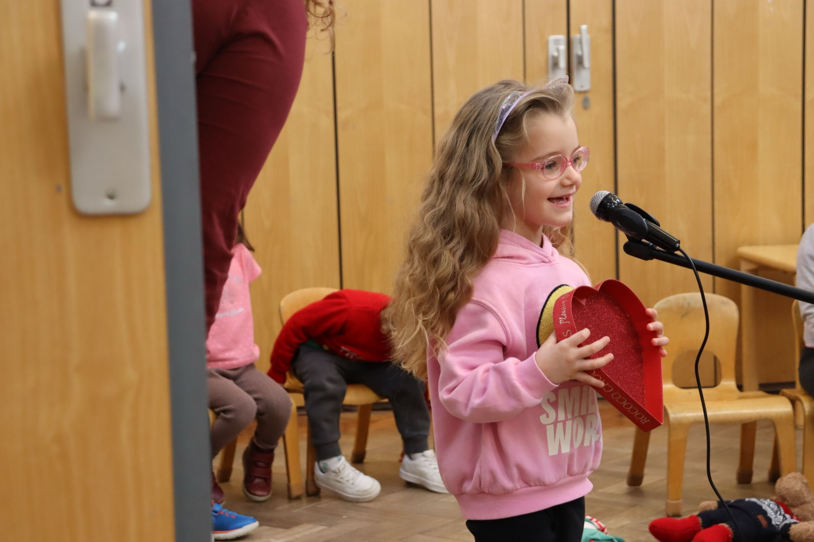
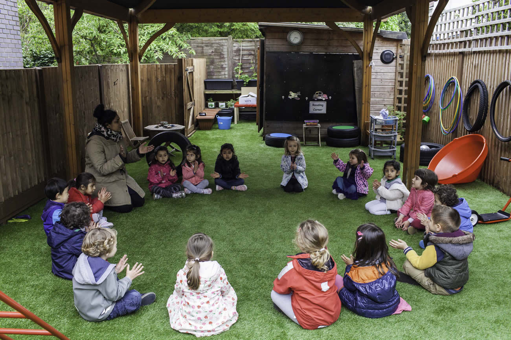
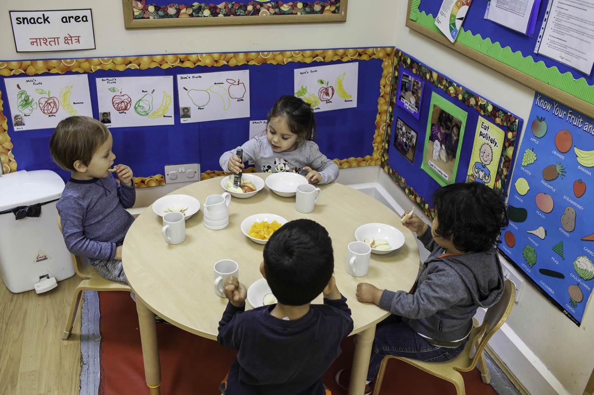

Baby Room
The Baby Room is designed to be safe and nurturing for babies aged 6 months to 2 years, with a focus on independence and exploration. Low furniture, open play areas and natural materials let the youngest children move, reach and discover at their own pace.
There's a dedicated enclosed garden area right beside the nursery, shared with the Toddlers and Pre-school rooms — a safe outdoor space built for little legs.

Toddlers
The Toddlers Classroom is a dynamic, engaging space for children aged 2 to 3. Its open layout keeps things safe while promoting independence, with Montessori tools arranged for hands-on exploration.
A cosy library corner and various Montessori-focused play zones are set up so toddlers can choose and engage with activities on their own — building confidence one small decision at a time.

Pre-school
Great Learners Preschool welcomes children aged 3 and older into a spacious, open classroom, with Montessori materials arranged to encourage children to explore and learn independently.
The room shares the garden with the Toddlers and Baby Room, with dedicated outdoor time scheduled for each group. The canteen sits within the classroom, and being close to the bathroom helps children manage their own needs with just a little guidance — real independence, built in.
Beyond the classroom
Extra activities & weekly themes
Dance, active play, French and yoga run alongside day trips and themed weeks — plus a few traditions the children look forward to all year.

Themed weeks
During Dinosaur Week, children dive into the science of volcanoes and the world of dinosaurs — building sharing and teamwork skills along the way.

Fun Fridays & the Christmas show
Toddlers dance to music every Fun Friday, and the whole nursery rehearses for its annual Christmas show — a highlight for children and parents alike.

Garden & day trips
Gardening, circle time and day trips get children outside and exploring.

Food & wellbeing
Freshly prepared meals, every day
Our nursery cook prepares fresh, healthy meals in-house, catering to a variety of dietary needs — because a good day starts with a good lunch.
Snack times double as a chance to talk, share and try new foods together, in a room designed for exactly that.
Meet the team
The people your child will know by name
“Welcome to Great Learners, our third Montessori nursery situated in the heart of Golders Green, just off the high street. Our dedicated team is here to support your child's growth and development, offering a warm, welcoming space for lifelong learning.”
Ms KittyNursery Manager
“I love creating a fun, safe, and nurturing environment where our children can thrive, blending Montessori principles with playful learning and calming yoga sessions.”
Ms JignaPreschool Class Practitioner
Plus one nursery cook, preparing fresh meals for the whole nursery every day.
Absolutely terrific nursery!! Kitty and all the staff are wonderful with the children; they are caring and warm, they encourage good behaviour and put on a variety of stimulating activities for the children on a daily basis. My son started in toddlers and moved swiftly to preschoolers. I now have my youngest who joined the baby room and she is thriving. Noreen, Jigna and Chammi as well as all the other teachers who have looked after both my children are fabulous!
Dana WarcelParent, Great Learners